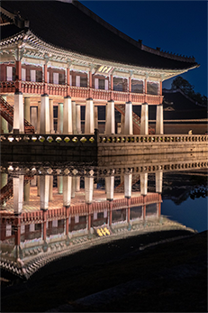
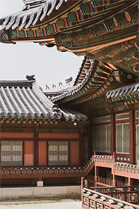
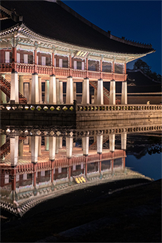
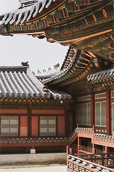

경복궁 Gyeongbokgung
관람가능 오전 09시 ~ 오후 06시 (입장마감 : 오후 05시)경복궁은 1392년 조선 건국 후 (1394년) 수도를 한양으로 옮긴 뒤 1395년(태조 4) 가장 먼저 지어진 조선왕조의 법궁입니다. 북쪽의 백악산(현재의 북악산)을 배경으로 지어진 여러 궁궐 건물과 정문인 광화문 앞으로 넓은 육조거리(현재의 세종로, 광화문 광장)는 한양의 중심이었습니다.


보도자료
경복궁과 창경궁에서 즐기는 어린이 특별 행사
어린이 궁중문화축전·수문장 교대의식 어린이날 특별행사 등
문화재청 궁능유적본부(본부장 직무대리 송인헌) 와 한국문화재재단(이사장 최영창)이 경복궁과 창 경궁에서 5월 어린이날을 맞이하여 어린이 대상 특별 프로그램을 선보인다.
[인형 탈 쓴 귀여운 수 문장 찾기! ’수문장 교대의식 어린이날 특별행사’] 경복궁 광화문 및 협생문 일대에서는 ’수문장 교대 의식 어린이날 특별행사’가 오는 ...
24.04.26

공연으로 만나는 봄 궁중문화축전
근정전을 가득 채운 100인의 공연부터 길놀이까지
문화재청 궁능유적본부(본부장 직무대리 송인헌)와 한국문화재재단(이사장 최영창)은 오는 27일부터 5월 5일까지 9일간 서울의 5대 고궁(경복궁·창덕궁·덕 수궁·창경궁·경희궁)과 종묘 일대에서 <2024 봄 궁중문화축전>을 개최한다...
[창덕궁과 경복궁에서 만나는 고궁음악회]
경복궁 근정전에서 오는 5월 4일과 5월 5일 양일간 ‘고궁음악회-100인의 치세지음(治世之音)’ 공연을 새롭게 선보인다. 이 공연은 근정전을 무대로 가야금
과 대금, 해금 연주자 100인이 출연하는 대규모 전통예술공연으로 관람객들에게 웅장한 감동을 선사할 것이다. ‘고궁음악회-100인의 치세지음(治世之音)’
은 이번 궁중문화축전에서 처음으로 선보이는 고품격 대규모 공연인 만큼, 쟁쟁한 연출진과 출연자가 함께한다. 국악평론가이자 연출자인 윤중강 ...
24.04.18

5대 궁궐 무제한 입장권 '궁패스' 국내외 판매 시작
3월 18일부터 4월 26일까지 국내외 온라인 플랫폼 판매
문화재청 궁능유적본부(본부장 직무대리 송인헌)와 한국문화재재단(이사장 최영창)은 궁중문화축전 특별 관람권인 ‘궁패스’의 판매를 오는 18일 시작한다. ‘궁 패스’는 18일부터 4월 26일까지 ‘티켓링크’와 ‘클룩’ 등의 해외 플랫폼을 통해 판매된다.
‘궁중문화축전’은 매년 봄·가을 서울의 5대 궁궐(경복궁 · 창덕궁 · 덕수궁 · 창경궁 · 경희궁)과 종묘에서 열리는 국내 최대 규모의 문화유산 축제로 올해 10주 년을 맞이한다. 올해 열리는 제10회 궁중문화축전은 봄⸱가을 연 2회 개최되며, 봄 궁중문화축전은 오는 4월 27일부터 5월 5일까지, 9일간 진행된다. ‘궁패스’ 는 봄 축전 기간 동안 서울의 5대 궁궐을 횟수의 제한 없이 입장할 수 있는 궁중문화축전 특별 관람권으로, 판매가격은 1만원이다. 사전 구매한 궁패스는 인천국 제공항과 궁궐별 안내부스에서 현장수령한 후 이용 가능하다. 올해 궁패스에는 다양한 혜택을 포함했다. 카드 형태의 궁패스에 티머니(T-money) ...
24.03.18
갤 러 리


 


